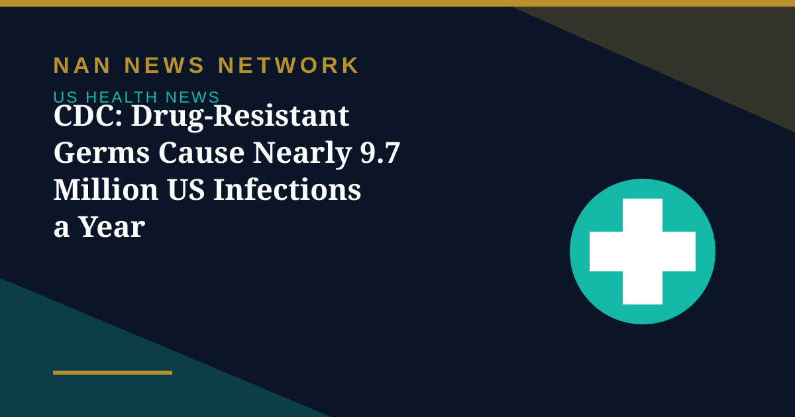

CDC: Drug-Resistant Germs Cause Nearly 9.7 Million US Infections a Year

Drug-resistant germs cause an estimated 9.7 million infections and roughly 50,800 deaths a year in the United States, according to the Centers for Disease Control and Prevention's 2026 Antimicrobial Resistance Threats Report, released October 27. The estimates use 2023 data and new surveillance methods, and the agency warns that expanded data sources and methods make direct comparisons with earlier reports inappropriate.
The urgent threats
The CDC reclassified 19 pathogens into urgent, serious and concerning tiers, listing Candida auris, carbapenem-resistant Acinetobacter, carbapenem-resistant Enterobacterales and drug-resistant gonorrhea as urgent threats. The agency highlighted sharp rises in C. auris, up about tenfold since 2019, and the rapid spread of resistance genes such as NDM in CRE, while downgrading C. difficile to serious after falling rates.
Public health and medical groups say the findings raise the urgency for better infection control, broader genomic surveillance and financial incentives such as the PASTEUR Act to revive antibiotic and antifungal development. The report's message is blunt: resistance is no longer a future threat, it is already a leading, everyday killer, and slowing it will take stewardship in hospitals, farms and clinics alike.
Sources: CDC 2026 Antimicrobial Resistance Threats Report, October 27, 2026
More on US Health News
- FDA Recall: Miyoko's Plant-Based Butter Pulled in 10 States Over E. Coli, Yeast and Mold
- CDC Deputy Director Jennifer Shuford to Leave After Midterms, Report Says
- FDA Clears Cullinan's Velinotamig Trial for Autoimmune Blood Disorders
- Regeneron Extends US Ebola Supply Deal Worth About $270 Million Through 2031
- FDA Warns San Francisco Fermented Foods Maker Over Pathogen Risks and Labeling
- Salmonella Oyster Recall Expands: What to Know About the Little Wicomico Outbreak
- Graziers Raw Milk Cheese Recall: 13 Sick, 8 Hospitalized as FDA Issues Class I Warning
- CDC and FDA Performance Ratings Hit All-Time Lows in Gallup Poll